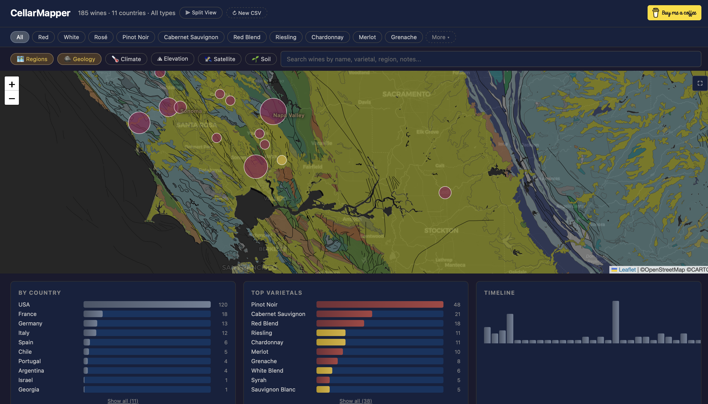

CellarMapper
Visualize your wine collection on an interactive world map with terroir overlays, charts, and your tasting notes.
Drop your CSV here
or click to browse
How to export your data
CellarTracker:
1. Log in to cellartracker.com
2. Go to My Cellar → List View
3. Click "Download" (bottom of page) → choose CSV
4. Upload the downloaded file here
Vivino:
Vivino doesn't have a native export. Use the Vivino Exporter browser extension to export your wines as CSV, then upload here.
Other apps:
Any CSV with columns like Wine, Vintage, Country, Region, Varietal, Type/Color will work. Missing columns are handled gracefully.